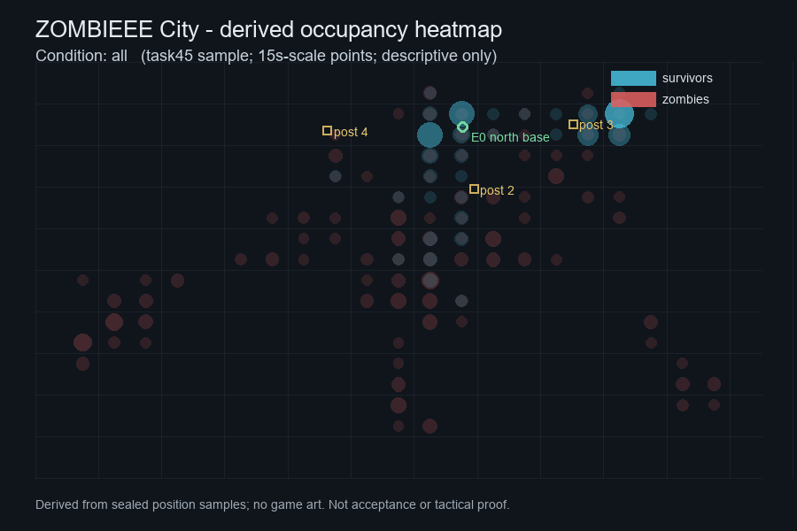

Milestone roadmap
Execution map
Dependencies & frontier
Every node is a real task card. Columns run left to right by prerequisite depth: each card sits one column right of its deepest prerequisite, so links point along the dependency direction. Selecting or focusing a card highlights its upstream path in blue and its downstream path in amber. Solid lines are prerequisites; dashed lines support a required outcome. The diagram is generated from the same ledger as the cards above.
No path focus. Focus or select a task to highlight its prerequisites and dependents.
Structural impact
Dependency impact
Derived from the committed progress/dependency-impact.json snapshot, which projects telemetry/dependency_impact.py over the same ledger as the map above. Counts are graph facts: an impacted open card has at least one transitive prerequisite that is not done; impacted is not blocked, failed or late.
Schedule unknown — no durations, effort, float, or CPM. The ledger has no duration, effort, start/finish, float or critical-path fields, so this panel reports structural dependency counts only and estimates no dates.
| # | Task | State | Open downstream | Direct downstream | Required open |
|---|---|---|---|---|---|
| Loading… | |||||
Replay lab
Movement & spatial panels
Derived occupancy/flow visualizations from sealed position samples — no captured gameplay frames are published. The current artifact is descriptive spatial data, not game art and not acceptance; no baseline-vs-variant result is claimed. A real one-parameter pair (defender_target=8 vs 4, same build/probe/formation/seed) appears here only after D fixes join reliability and seals both sides; raw frames remain private evidence and are not published. The panel below is a clearly marked skeleton, not a comparison yet.

Pending D’s clean, join-verified defender_target=8 vs 4 pair on the same build/probe/formation/seed, plus legal/IP clearance before any capture could be considered
Planned derived A/B (not yet available) — baseline defender_target=8 vs variant 4; same build, probe, formation and seed. Derived heatmap/analysis only; no captured frames are published. No result is claimed until D provides a metadata-complete sealed pair.
Reserved for the baseline derived heatmap/analysis. No artifact yet.
Reserved for the variant derived heatmap/analysis. No artifact yet.
Required pair metadata before this A/B opens
- same
build_sha,probe_sha, formation mode and seed on both sides; - only
defender_targetchanges: 8 (baseline) vs 4 (variant), withdefender_reinforce,wave_visitorsanddefender_ordersrecorded equal; - sealed bundle id + derived heatmap/analysis path per side; no raw frames published (IP hold);
- capture cadence/date and known gaps recorded; descriptive only, no tactical or acceptance claim.
Quick lane
3-minute smoke
Short sealed smoke run for fast iteration. Only derived telemetry/summary and, at most, a small occupancy/analysis excerpt are eligible — no raw gameplay frames, screenshots, native art or UI. A quick lane is diagnostic, not a wave/balance acceptance claim; the baseline-vs-variant pair remains a separate, longer package.
- Target: one ~3-minute sealed run (wall-clock) with the same build/probe/formation identity expected on the A/B sides.
- Required: sealed bundle id, build/probe SHA, formation/parameter identity, cadence/date, derived artifact path and known gaps.
- Publication is prepared but gated: no page/package publication until packaging and legal/IP fit is confirmed; raw captures remain private evidence.
Execution
Queues
Readiness is derived from dependsOn and the optional handoff block. The ledger's legacy blocked flag is ignored, so a stale flag cannot move a card into or out of a queue.
One queue per open card, in this order: unmet prerequisite → Waiting dependency; handoff status waiting-external → Waiting external; handoff routed to owner or owner-action → Owner action; active/review → In progress; otherwise → Ready now. Done cards are listed separately and are never counted as open.
Explore the work
Every task has one primary milestone and criterion. Discovered work is linked to its original outcome, without counting it twice toward the City release.
Discovered task — unplanned bug fix, audit or integration work added after the original 24-task proposal.